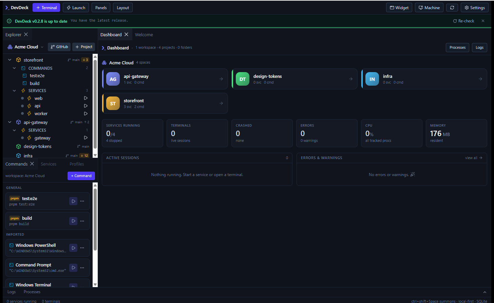
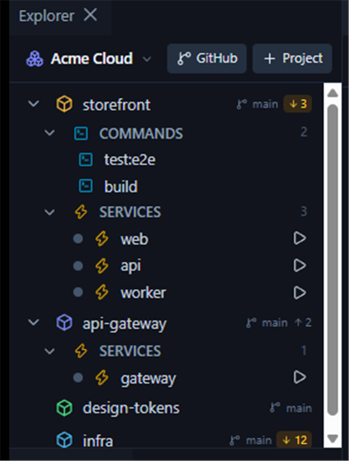
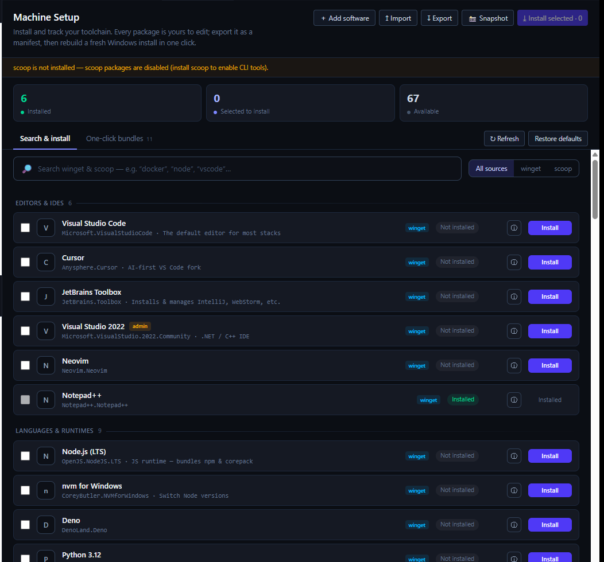
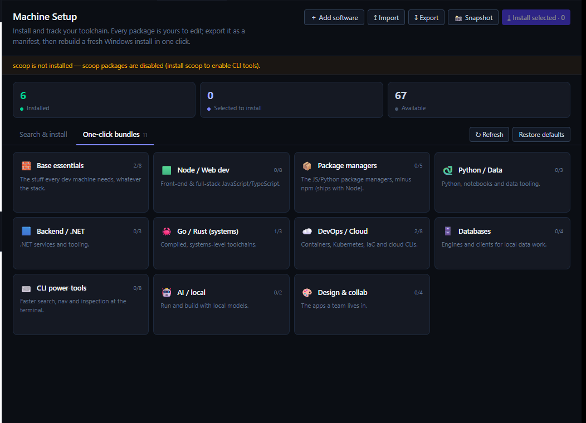

Spaces
Organise work as Workspace → Project → Folder. Every command, service and terminal runs in the right directory — no cd roulette.
DevDeck runs every service, watches what's live — including servers you or your AI assistant start elsewhere — tracks each repo's branch and what's left to pull, and drops you into any terminal. One window instead of six.

Boot a space, watch status go live, catch up a repo that's fallen behind, and summon the widget — all with demo data, no install required.
Working across a monorepo or a handful of apps means opening a pile of terminals and remembering a pile of commands. DevDeck folds that into one control surface.
Organise work as Workspace → Project → Folder. Every command, service and terminal runs in the right directory — no cd roulette.
Define dev servers and workers once, then start, stop and restart them with live status, CPU, memory, uptime and port.
Every project shows its branch and how far ahead/behind it is. One click fast-forwards — no terminal detour.
Paste a GitHub URL. DevDeck clones it, scans for services and tools, and hands it to you ready to start.
Started a server from a shell, a script, or an AI assistant? DevDeck spots the port, names the tool, and offers to adopt it.
Genuine ConPTY sessions with xterm.js, docked as tabs. They live in the backend, so they survive a UI reload. Pick the shell per item.
First run on a new machine? DevDeck detects missing tools (Node, pnpm…), installs them, runs the bootstrap, then starts.
Install your toolchain through winget & scoop — search, one-click bundles, your own packages — and export a manifest to rebuild any box.
Drag, split, tab, float and resize any panel. Layouts autosave; launch profiles boot a whole stack in one action.
DevDeck reads each project's current branch and, on a quiet interval, checks the remote. Fall behind and an amber counter appears on the row — click it to fast-forward, streamed to the Logs.
pull --ff-only — never a surprise merge
A floating, always-on-top widget on Ctrl+Shift+Space.
It shows a live card per running session — status, port, uptime, CPU — and catches servers started
outside DevDeck entirely, offering to adopt them into a space.
Fresh Windows install? DevDeck installs your toolchain through winget & scoop: search the catalog or pick a one-click bundle. It sees what's already there, every package is yours to edit, and a manifest rebuilds any machine.


Install it, load the example workspace, and watch it work before wiring up your own repos.
Grab the installer from GitHub Releases and run it — or with scoop:
scoop bucket add devdeck https://github.com/d3velopm3nt/devdeck then scoop install devdeck.
Single app, no dependencies, and it updates itself in place.
One click on the welcome screen builds a small demo project — a real web server and a background worker — so you can press Start and see it work.
Point DevDeck at a repo root — or paste a GitHub URL and let it clone — then add the services you already run: pnpm dev:web, cargo run, and give them a port.
Hit Start all, or summon the widget with Ctrl+Shift+Space from any app.
DevDeck is MIT-licensed and always will be. If it takes a little friction out of your morning, you can chip in — appreciated, never expected.